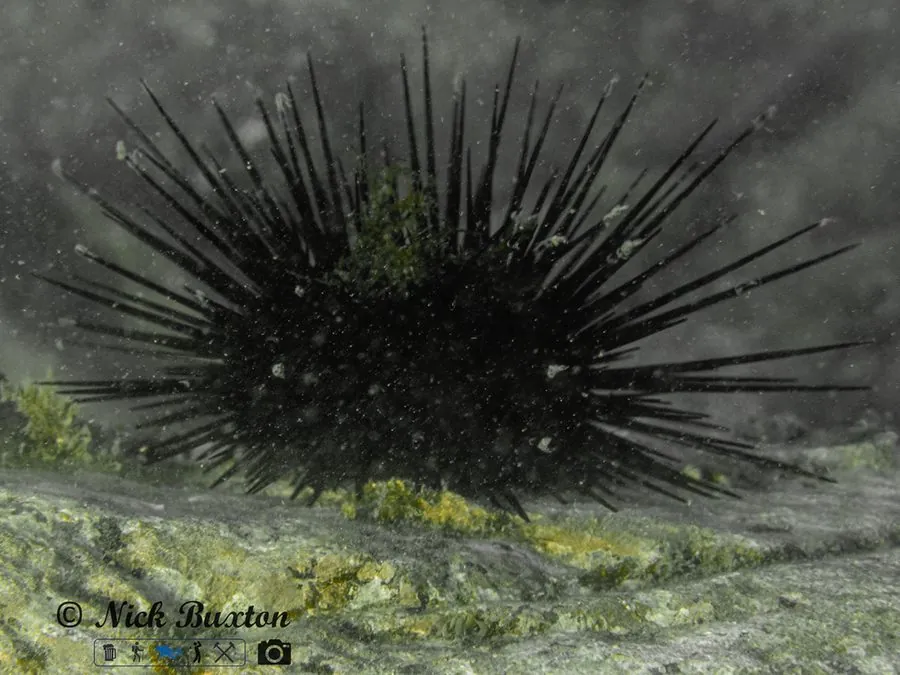

其他无脊椎动物 · 动物界
紫海胆 Heliocidaris crassispina

体表密布紫黑色棘刺的常见海胆，用亚里士多德提灯刮食礁石上的海藻，在中国东南沿海是重要的渔业资源。
- 分类
- 门棘皮动物门纲海胆纲目拱齿目科长海胆科属长海胆属
- 栖息环境
- 潮间带至浅海岩礁区，白天藏身于礁缝石洞
- 地理分布
- 中国东南沿海、日本南部和朝鲜半岛沿岸
- 保护级别
- 暂无评估
物种志
紫海胆壳径约 4–8 cm，棘刺粗壮、紫黑色或暗紫色，长 2–3 cm；壳面分为五条步带和间步带，管足从棘间伸出，用于运动和附着。口部有由五枚齿组成的亚里士多德提灯，用来刮取海藻。
它夜行性，白天藏在岩缝和洞穴中，夜间出洞刮食褐藻、绿藻和红藻。夏季繁殖，雌雄个体把精卵排入海水，受精后发育成浮游幼体，约 1 个月后变态沉底。紫海胆通过啃食海藻控制藻类数量，维持海藻林与海胆之间的平衡；数量过多时会啃光海藻，形成光秃秃的海胆荒。它分布于中国东南沿海、日本南部和朝鲜半岛沿岸，是名贵的食用海胆，生殖腺即海胆黄，经济价值高，目前以捕捞和养殖供应市场。
形态与习性
- 食性刮食礁石上的褐藻、绿藻和红藻
- 壳径约 4–8 cm，棘刺长 2–3 cm
- 寿命可活数年至十余年
- 繁殖夏季排精卵在海水中受精，幼体浮游约 1 个月
- 生态作用控制海藻数量，过量会形成海胆荒
- 经济海胆黄（生殖腺）名贵，是重要渔业资源
趣味知识
- 海胆口部的五枚硬齿组成亚里士多德提灯，能刮下礁石上的海藻。
- 海胆太多时会啃光海藻，形成光秃秃的海胆荒，影响整个生态系统。
- 紫海胆的棘刺易断，刺入皮肤后会残留，处理时需戴手套。